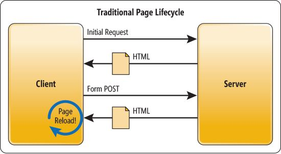
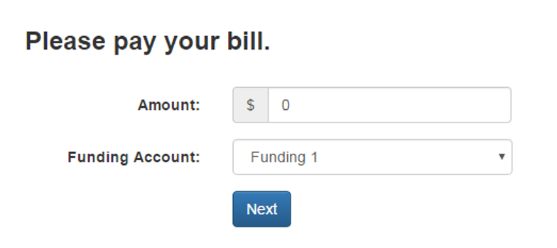
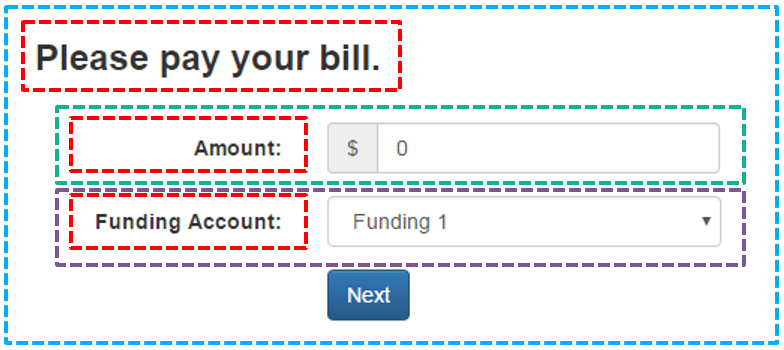
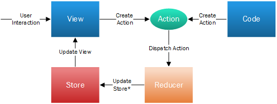

State of JavaScript
+ React
(November 2016)
Objects
- Not exactly the same as C# objects
- Just containers of named values - properties and methods
// Using object literal to create an object
var car = {
type: "Honda",
model: "Civic"
};
console.log(car.type); // Honda
console.log(car["type"]); // Honda
for (var propName in car) {
console.log (propName, car[propName]);
}
Prototype
var car = {
wheels: 4
}
var truck = {
wheels: 8
}
var vehicle = {};
vehicle.__proto__ = car; // vehicle.wheels === 4
vehicle.__proto__ = truck; // vehicle.wheels === 8
vehicle.wheels = 2; // "overrides" the prototype value
truck.color = "red";
console.log(vehicle.color); // "red";
Prototype
function Car() {
this.color = "red";
}
var car = new Car();
console.log(car.color); // "red"
is same as...
function Car() {
var this = {}; // not valid, just for illustration
this.__proto__ = Car.prototype;
this.color = "red";
return this;
}
Functional JavaScript
Imperative
var result;
function capWords(input) {
var counter;
var inputArray = input.split(" ");
var transformed = "";
result = [];
for (counter = 0; counter < inputArray.length; counter++) {
transformed = [
inputArray[counter].charAt(0).toUpperCase(),
inputArray[counter].substring(1)
].join("");
result.push(transformed);
}
};
capWords("captialize these words");
alert(result.join(" "));
Functional JavaScript
Object Oriented
(function() {
var SomeText = function(text) { this.text = text; };
SomeText.prototype.capify = function(str) {
return [str.charAt(0).toUpperCase(), str.substring(1)].join("");
};
SomeText.prototype.capifyWords = function() {
var result = [];
var textArray = this.text.split(" ");
for (var counter = 0; counter < textArray.length; counter++) {
result.push(this.capify(textArray[counter]));
}
return result.join(" ");
};
var newText = new SomeText("captialize these words");
alert(newText.capifyWords());
}());
Functional JavaScript
Functional
(function() {
var capify = function(str) {
return [str.charAt(0).toUpperCase(), str.substring(1)].join("");
};
var processWords = function(fn, str) {
return str.split(" ").map(fn).join(" ");
};
alert(processWords(capify, "captialize these words"));
}());
Some Other Things To Know
- Strict Equality (===)
- Block Scope
- IIFE ("iffy") - Immediately-Invoked Function Expression
Strict Equality
console.log(3 == "3"); // true. Abstract forces type conversion
console.log(3 === "3"); // false
console.log(true == "1"); // true
console.log(true === "1"); // false
console.log(true == 1); // true
console.log(true === 1); // false
console.log(undefined == null); // true
console.log(undefined === null); // false
console.log(true == "true"); // false
console.log(true === "true"); // false
Block Scope
var carName = "Honda"; // global variable
function foo() {
bar = "Global"; // automatic global variable
if (carName === "Honda") {
var model = "Civic";
}
for (var i = 0; i < 5; i++) {
var y = i;
}
console.log(model, i, y); // model, i, y still accessible
}
console.log(bar); // bar is global
IIFE
(function() {
// code
})();
- All variable are "private" to the function, does not leak out to global space
- Function expression, not a declaration
- Code inside () considered expression
- Expression returns a value, in this case, the function itself
- Not named
e.g., var f = function() { ... }
IIFE
Use it to overcome lack of block scoping when using closures inside a loop
var result = [];
for (var i=0; i < 5; i++) {
result.push(function () { return i });
}
console.log(result[1]()); // 5
console.log(result[3]()); // 5
Use this instead:
for (var i=0; i < 5; i++) {
(function () {
var i2 = i; // copy current i
result.push(function () { return i2 });
}());
}
IIFE
Create private variables
var counter = (function () {
var i = 0;
return {
increment: function () {
return ++i;
}
};
})();
counter.increment();
counter.i; // undefined.
ES5: Strict Mode
- "use strict";
- VB Option Explicit?
- Ignored if the browser doesn't support it
- Variables must be declared
- Can't use local variable name as the parameter name
- "this" is undefined in non-method functions
- No octal numbers
- eval does not leak variables
Without Strict Mode
function noStrictFunction() {
globalVariable = "Test"; // Global variable created
glovalVariable.length = 100; // Silent failure
}
function Person(name) {
this.name = name; // "this" in non-method functions is "window"
}
var user = Person("Picard"); // Global variable created for "name"
console.log(010); // 8 (Octal number)
function test() {
var x = 1;
eval("var y = x + 1;"); // y is now available outside of the eval
}
ES5: Legal trailing commas
var shape = {
width: 100,
height: 200,
}
var count = [0, 1, 2, 3,];
ES5: Array.prototype: forEach(), map(), etc
var a = [1, 2, 3, 4];
a.forEach(function(element) {
console.log(element);
});
var doubled = a.map(function(element){
return element * 2;
})
var sum = a.reduce(function(previous, current) {
return previous + current;
}, 0);
var even = a.filter(function(element) {
return element % 2 === 0;
});
Some of new features in ES2015 (ES6)
- Arrow functions
- let & const
- Template Literals
- for-of
- Destructuring
- Spread
- Parameter default values
- Classes
- Module support
ES2015 Example
const redCar = { wheels: 4, color: "red" }; // const
function whatCar( {wheels, color} ) { // destructuring
if (color === "red") {
let result = `Red car with ${wheels} wheels`; // let, template literal
return result;
} else {
return "Unknown car";
}
}
console.log( whatCar(redCar) ); // "Red car with 4 wheels"
let { wheels } = redCar; // destructuring
console.log( wheels ); // 4
const blueCar = { ...redCar, color: "blue" }; // spread
console.log ( blueCar ); // { color: "blue", wheels: 4 }
const numbers = [1, 2, 3];
let doubled = numbers.map( n => n * 2); // arrow functions, not demonstrated
// here but it keeps "this" scope
for (let n of doubled) { // for-of
console.log(n); // 2, 4, 6
};
console.log(n); // Error: n is not defined.
redCar.wheels = 6; // OK
redCar = blueCar; // Error: "redCar" is read-only
SPA Architecture

Traditional Full-Page Postback

AJAX Partial Rendering

Single Page Application


AngularJS Quick Example
Angular Template, Component, HTML:
<ul>
<li ng-repeat="phone in $ctrl.phones">
<div>{{phone.name}}</div>
</li>
</ul>
angular.module('phoneCategoriesApp').
component('phoneList', {
template: 'phone-list/phone-list.template.html',
controller: function PhoneListController() {
this.phones = [ /* list of phones here */ ];
}
<html ng-app="phonecatApp">
<head>...</head>
<body>
<!-- Use a custom component to render a list of phones -->
<phone-list></phone-list>
</body>
</html>
TypeScript
class Student {
fullName: string;
constructor(public firstName, public middleInitial, public lastName) {
this.fullName = firstName + " " + middleInitial + " " + lastName;
}
}
interface Person {
firstName: string;
lastName: string;
}
function greeter(person : Person) {
return "Hello, " + person.firstName + " " + person.lastName;
}
var user = new Student("Jane", "M.", "User");
ReactJS
What is ReactJS?
- JavaScript library for creating UI components
- "Comparable" to the "V" in MVC
- UI as a function of application state
- Built by Facebook
- Open-sourced in May 2014
- Quickly gained popularity
- Who uses React?
Why ReactJS?
Component and Composition


ContentLabel AmountInput
FundingAccountSelect BillPayInput
ContentLabel AmountInput
FundingAccountSelect BillPayInput
Uni-directional Data binding
- No logic required for updating multiple components when store changes (redux)
JSX Example
render() {
return (
<div className="form-group">
<ContentLabel className="col-sm-2 control-label"
labelText={this.props.labelText} />
<div className="col-sm-3">
<div class="input-group">
<div class="input-group-addon">$</div>
<input className="form-control" type="text"
value={this.props.amount}
onChange={this.amountChanged} />
</div>
</div>
</div>
)}
Flux and Redux
- Flux
- Architecture created by Facebook
- Similar to CQRS pattern
- In MVC, a model is both updated and queried by the controller. In Flux, the data from Store is read-only
- Both flux and redux can be use with other frameworks

Redux
- Improvements over Flux
- Single Store to minimize complexity
- Single source of truth
- Makes server rendering easier
- Event sourcing allows time travel

Demo
See also...
- WebSockets, WebAssembly, WebComponents
- asm.js, Linting, Bundling
- Hot Loading, Async, Promises, etc.
Gotcha's:
- Optional semicolon and minification
- Implicit semicolon on return, etc.